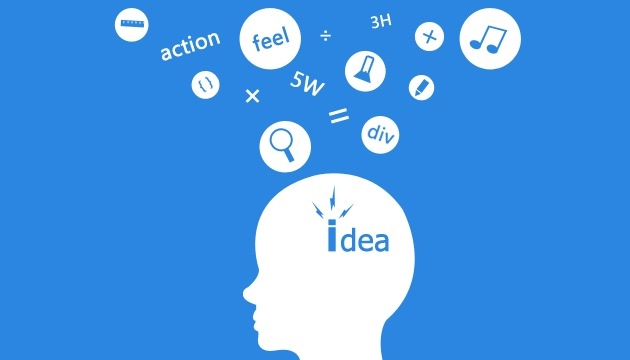

我们究竟需要什么样的PM
前一阵子和其他的同学一起聊天，说到我们校招产品淘汰率之高的时候，有同学说我们是要求太高，然后我回去仔细思考了一下，究竟是我们team的要求太高，还是产品的本身就需要那么优秀的人呢？思考了一段时间，想了一下，我觉得我们不降低标准的思路是正确的。
于是乎，我便简单列举了一下我这段时间思考的产品需要的一些特质与技能，其中的大部分我自己都没有达到，籍此与大家一起来分享，至于为什么需要这些特质，以及如何去做，我也有了一点未经验证的想法，下一篇文章会与大家一起分享我的思考。
非专业要求
对于产品这个职位，我们更关注应聘者自身的素质远远大于他掌握技能的要求，对于个人素质我们的要求大致是这样的。
1、逻辑性强，聪明
2、沟通能力强，反应快，能够很快速的理解别人说什么,别人想要什么
3、执行力强，没有做完的事情都会立刻去push、去跟进
4、知识面非常广，各种领域的知识丰富，且有一定的深度
5、批判性思维，对事物有自己独特的见解，不人云亦云
6、同理心，即善于从别人的角度来思考问题
7、对事情充满好奇心，思维模式比较special，有探索精神，有激情
8、具有自我反省和自我修正的能力
9、做事有规划，能够坚持
10、面对问题和压力的时候很冷静，能够的给出特定情境，特定问题范围内最靠谱的解决方案。
专业能力的要求
专业能力方面，个人觉得，只要用心，肯花时间，基本上不会差很多，当然，应届生这方面几乎是没有要求的……如下这些都是我接下来想要学的
1、掌握市场调研的工具和方法（有一套成熟的理论）
2、数据分析方法，工具的使用
3、交互设计工具的使用，用户界面的设计
4、项目管理的方法，掌控项目的能力，相关工具的使用